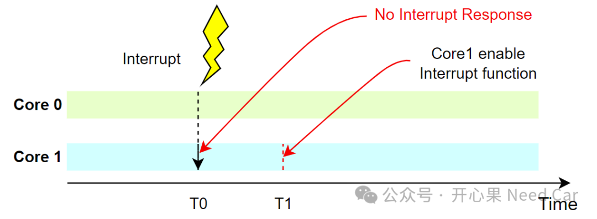
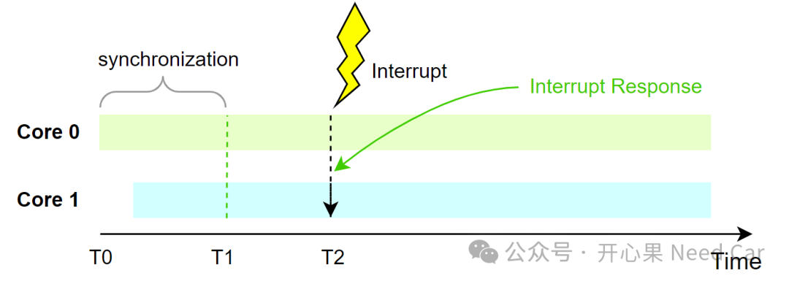
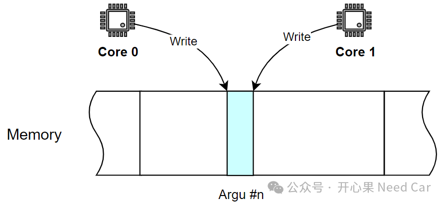
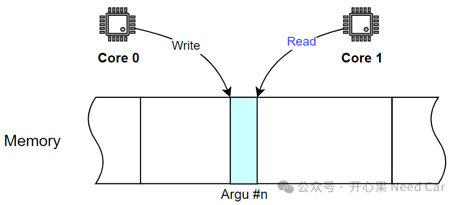
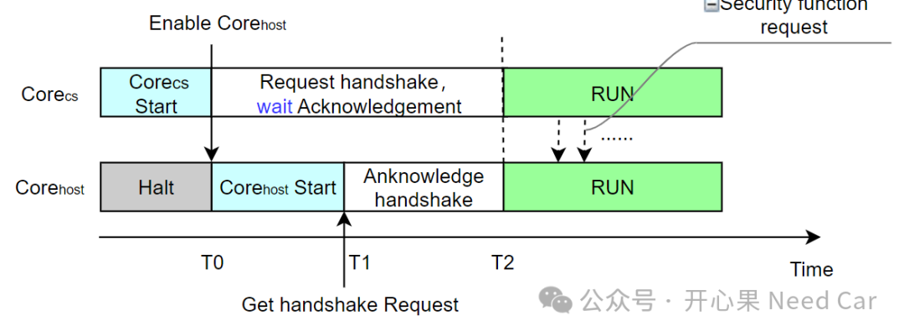

目前，车载控制器选用的芯片，普遍支持多核。并且，在实际项目开发中，核间通信是一个非常关注的点。如果核与核之间配合得当，那么，产品性能将会事半功倍；如果核与核之间配合不好，那么，产品性能可能会大打折扣，事倍功半。在实际的工程项目中，核间同步引发的bug，偶有出现。本文，聊一聊核间同步那点事。
这里举一个例子，某个芯片包含Core0和Core1。不进行同步的情况下，Core0在T0时刻触发Core1中断，但是，Core1的中断功能需要在T1时刻使能。这样就会导致一个问题：Core1无法响应Core0的中断请求，示意如下：

所以，为了避免如上的工况，Core0与Core1需要进行同步处理。软件设计中。不同的核，负责的任务不同，初始化到任务正常运行的时机也将不同，因此，可以让不同核之间完成同步后，一起运行。比如：T0到T1之间，让Core0和Core1进行同步动作，这里的同步动作就包括中断使能，如此，等到T2时刻，Core0再次触发Core1的中断时，Core1可以及时响应Core0的中断请求，而不会出现无法响应的工况，示意如下：
核间同步不仅仅在程序初始化流程中需要注意，涉及到核间通信的场景一样需要注意。
如上图，Core0、Core1在同一时刻对内存区的某个变量（eg：Argu #n）进行写操作，如此，会造成数据的冲突，即：数据一致性破坏。
举例2：
某一时刻，Core0对内存区的某个变量进行写操作，但是，Core1可能正在对其进行读操作，如此，Core1读取到的数据就可能出现非预期情况，甚至影响整个系统功能。

随着信息安全法规的要求越来越严苛，信息安全扮演的角色越来越重。在信息安全的处理中，往往会有一个专门的安全核（eg：Corecs），用于处理主核（eg：Corehost）的请求。因此，安全Corecs与Corehost之间的同步也很重要。举例：如果Corecs没有完成初始化，或者功能未使能的情况下，Corehost请求信息安全处理就会带来非预期结果。因此，Corecs与Corehost之间需要同步处理，这个过程，我们也称为"握手"（handshake）。在级联安全启动中，主芯片加电以后，Corecs启动，如果Corecs没有让Corehost启动，Corehost无法启动（处于halt状态），当Corecs校验主核程序通过，启动Corehost，发送握手请求，之后等待Corehost的响应。T0时刻，Corehost开始运行它的程序，并且不断地查询Corecs请求的握手信息；T1时刻，当Corehost查询到Corecs的握手请求信息以后，Corehost如果完成初始化，且功能ready，应答Corecs的握手请求；T2时刻，Corecs与Corehost完成握手交互，同时进入运行状态，之后，Corecs可有效响应Corehost安全功能请求。
点击下方关注，一起聊聊Autosar/嵌入式，如果需要，联系作者进群，给你更专业的解答